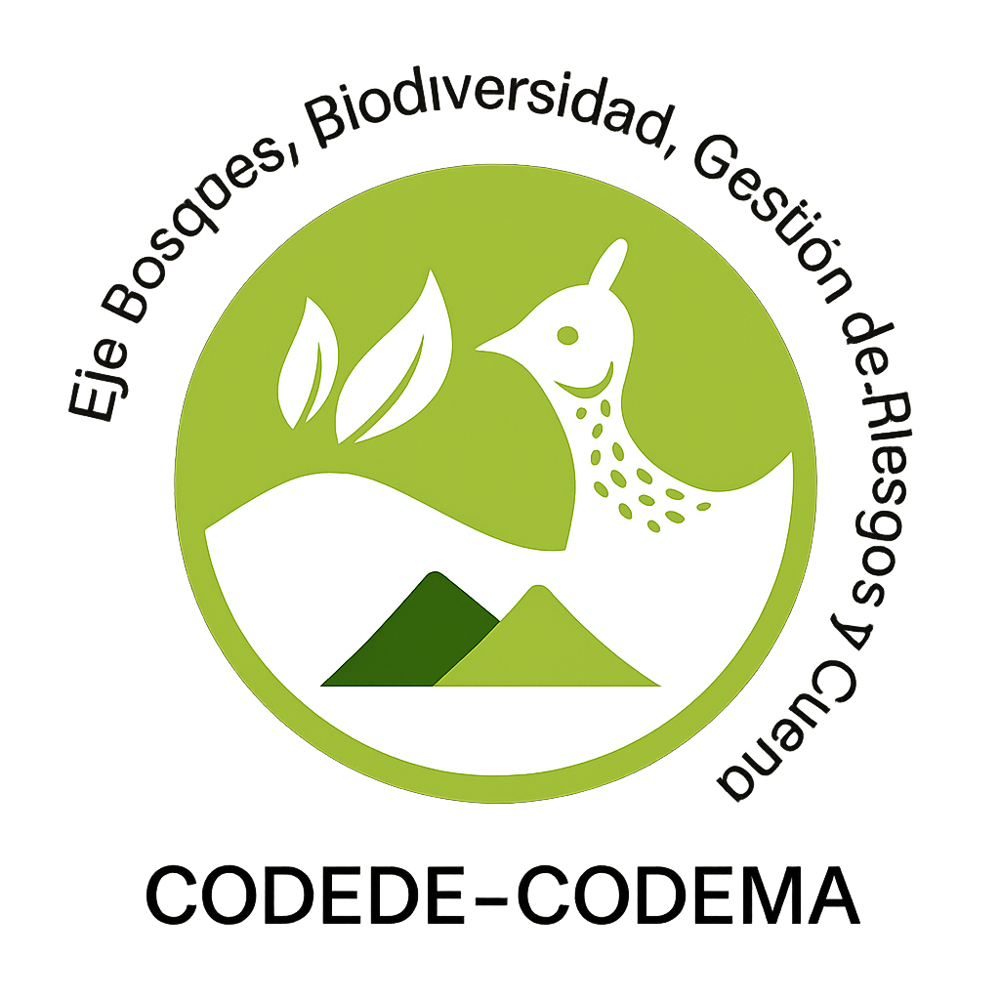

Centro de Informes
· Ecología Forestal Sololá
Módulo
Inicio
Geoportal
Informes
Actualizar
Vista previa A4
Cargando datos…
Generar vista previa
Descargar PDF
Preparando centro de informes ecológicos
Cargando series, indicadores y capas consolidadas del módulo de ecología forestal…